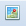

How To Use The Geobrowser
The geobrowser displays mapping data as a series of layers, listed in the left-hand column, each with a check box to switch their visibility on or off. The layers are organized into "Base Layers" and "Overlays" groups. Base layers provide satellite imagery, terrain, and street maps as a foundation onto which the overlay layers are displayed. Layers positioned higher in the list are drawn above lower items within the map. Change the order of display by clicking and dragging the title of a layer to a new location in the list. Some layers (e.g. Parcels) are only visible at limited zoom levels.
Double-click on the map to zoom in and center the display at that location. Hold down the shift key to draw a zoom extent.
The Toolbar

The toolbar is located above the map and contains a set of tools that provide navigation, measuring, and search capabilities. Hover the mouse over a tool to see a brief description of the tool's functionality.
 Help
Help
Open this window and display these instructions.
 Pan
Pan
Click-and-drag within the map, moving the map north, east, south, or west.
 Zoom In
Zoom In
Zoom into the map one level, centering the display at the location clicked.
 Zoom Out
Zoom Out
Zoom out from the map one level, centering the display at the location clicked.
 Enter Coordinates, Go To Location
Center and zoom the map to a location entered as latitude and longitude coordinates.
Zoom Previous
Click to zoom to your last location.
 Zoom Next
Zoom Next
Click to forward the map to the next location. This button is only available after having clicked Zoom Previous one or more times.
 Measure Length
Measure Length
Draw a line on the map, with the length of the line displayed below the map at the bottom of the window. Click within the map to start measuring and double-click to stop. Hold down the shift key to draw freehand, making the tracing of irregular features a quick task.
 Measure Area
Measure Area
Draw a polygon on the map, with the area of the polygon displayed below the map at the bottom of the window. Click within the map to start measuring and double-click to stop. Hold down the shift key to easily draw freehand shapes around complex features.
Feature Information
Click within the map to display attribute information from the visible layers at the location clicked. If data from more than one layer is returned, the information window will contain multiple tabs, one for each layer.
Search
Locate and zoom to a property by entering a partial or full APN (Assessor's Parcel Number). APNs are unique identifiers assigned to each parcel and can be determined by visiting the Santa Clara County Assessor's website at www.sccassessor.org . Results will remain highlighted on the map until the search window is closed. Double-click a row in the results table to zoom to that property.